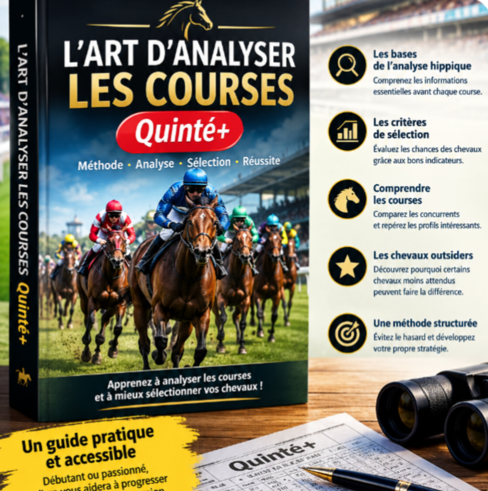

🔎
Les bases de l’analyse
Comprenez les informations essentielles à examiner avant chaque course.

Apprenez à mieux lire les informations d’une course, comparer les chevaux et construire une analyse plus structurée avant chaque Quinté+.
Un support pratique pour mieux comprendre les courses hippiques et les critères qui peuvent compter dans une analyse.
Comprenez les informations essentielles à examiner avant chaque course.
Apprenez à comparer les concurrents à partir d’indicateurs pertinents.
Explorez les profils moins attendus et la façon de les intégrer à votre réflexion.
Découvrez le contenu du guide et commandez votre exemplaire. Un support pratique pour approfondir votre méthode d’analyse des courses hippiques.
Commander le guide maintenant →